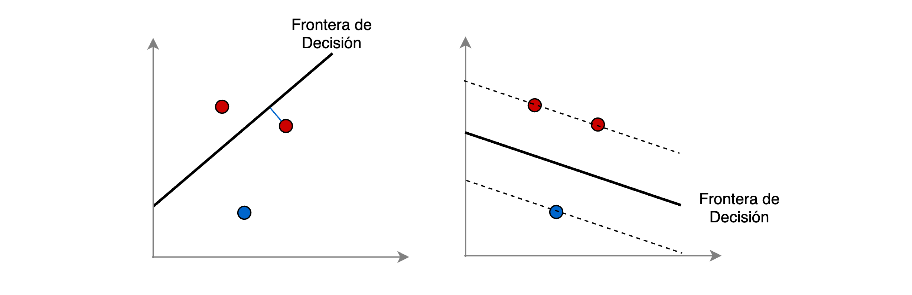

Máquinas de soporte vectorial (SVMs) —
0:00 min | Última modificación: Septiembre 27, 2021 | [YouTube]
La definición matemática de una máquina de soporte vectorial es la siguiente:
Sea un conjunto de patrones de entrenamiento \(x_i \in \mathbb{R}^p\), \(i=1, \dots, n\), y \(y_i\) la variable dependiente con \(y \in \{-1, +1 \}\), el objetivo es encontrar \(w \in \mathbb{R}^p\) y \(b \in \mathbb{R}\), tal que la predicción dada por:
sea correcta para la mayor cantidad de patrones.
Para la clasificación, esto equivale a resolver el problema primal:
sujeto a:
Una explicación intuitiva es la siguiente:
Para llegar al óptimo se debe minimizar \(0.5 w^Tw\).
\(w^T \phi(x_i)+ b\) es la frontera de decisión entre las clases
Si un patrón es correctamente clasificado, entonces \(\zeta\) = 0.
Si un patrón es mal clasificado, \(zeta\) > 0 haciendo crecer el segundo término de la función objetivo.

El problema dual del primal anterior es:
sujeto a:
Donde \(e\) es un vector de unos, y \(Q\) es una matriz semidefinida positiva de orden \(n \times n\).
El término
donde
es un kernel.
La representación dual del problema hace explicito que los vectores de entrenamiento son mapeados a un espacio dimensional superior por la función \(\phi()\), o Kernel Trick.
Una vez el problema ha sido resuelto, la función de decisión es:
La clase pronosticada se obtiene al aplicar la función signo a la ecuación anterior.
Los vectores \(x_i\) son los vectors de soporte.
El modelo anterior se suele re-escribir como:
La función kernel puede ser una de las siguientes:
Kernel Lineal
Kernel polinomial
Kernel RBF
Kernel sigmoidal